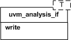

TLM Interfaces
The UVM TLM library defines several abstract, transaction-level interfaces and the ports and exports that facilitate their use. Each TLM interface consists of one or more methods used to transport data, typically whole transactions (objects) at a time. Component designs that use TLM ports and exports to communicate are inherently more reusable, interoperable, and modular.
The UVM TLM library specifies the required behavior (semantic) of each interface method. Classes (components) that implement a TLM interface must meet the specified semantic.
| TLM Interfaces | |
| The UVM TLM library defines several abstract, transaction-level interfaces and the ports and exports that facilitate their use. | |
| TLM1 | The TLM1 ports provide blocking and non-blocking pass-by-value transaction-level interfaces. |
| TLM2 | The TLM2 sockets provide blocking and non-blocking transaction-level interfaces with well-defined completion semantics. |
| Sequencer Port | A push or pull port, with well-defined completion semantics. |
| Analysis | The analysis interface is used to perform non-blocking broadcasts of transactions to connected components. |
TLM1
The TLM1 ports provide blocking and non-blocking pass-by-value transaction-level interfaces. The semantics of these interfaces are limited to message passing.
TLM2
The TLM2 sockets provide blocking and non-blocking transaction-level interfaces with well-defined completion semantics.
Sequencer Port
A push or pull port, with well-defined completion semantics. It is used to connect sequencers with drivers and layering sequences.
Analysis
The analysis interface is used to perform non-blocking broadcasts of transactions to connected components. It is typically used by such components as monitors to publish transactions observed on a bus to its subscribers, which are typically scoreboards and response/coverage collectors.
